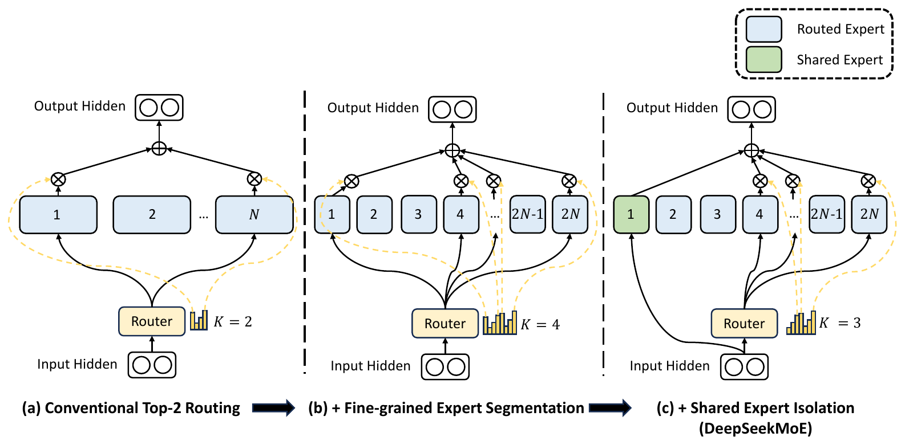
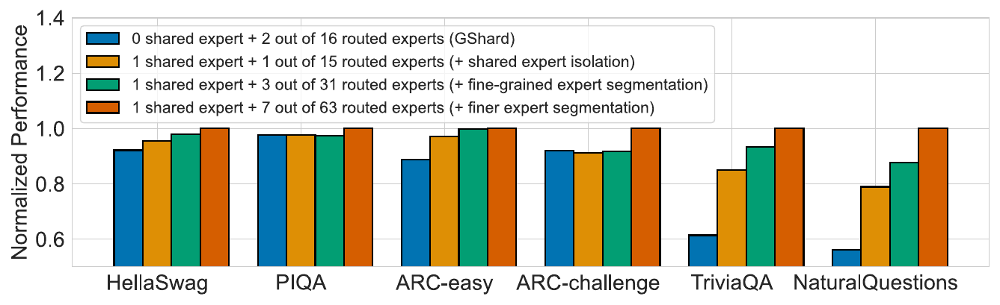
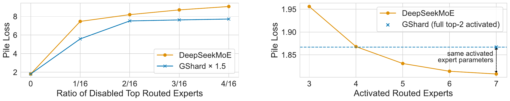
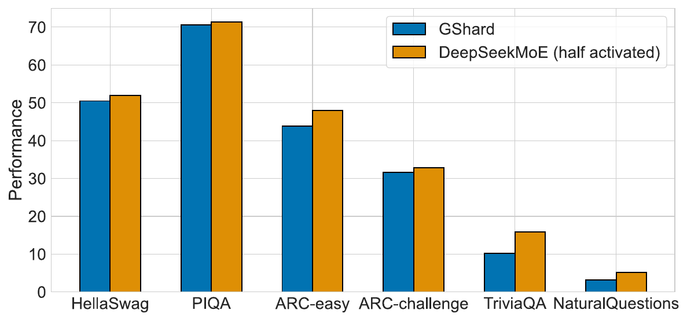

本文精读 Dai 等人发表于 ACL 2024 的 DeepSeekMoE: Towards Ultimate Expert Specialization in Mixture-of-Experts Language Models（ACL Anthology 版 PDF，预印本 arXiv:2401.06066）。论文提出两项架构改动，本文只讲这两项：怎样改变混合专家层的计算，针对什么问题，实验如何检验。读者需要了解 Transformer 中 token 与前馈网络的含义。图表编号、页码和数值来自 ACL 版论文，本文没有重新训练或评测模型；16B 模型只概括主要对比。
主要工作
混合专家（Mixture-of-Experts，MoE）层把 Transformer 中的一个前馈网络（feed-forward network，FFN）换成 个并行的专家 FFN，由路由器（router）为每个 token 选出 个计算。总参数随 增长，每个 token 实际参与计算的参数（激活参数）和计算量（浮点运算次数 FLOPs）只随 增长。论文认为，GShard（Lepikhin 等，2021，每个 token 激活 top-2 专家）一类只有少量大专家的设计，专家难以获得集中且互不重叠的知识，即专家专业化（expert specialization）不足。论文，摘要、§1
DeepSeekMoE 提出两项对应的改动。细粒度专家分割把每个专家 FFN 的中间维度缩小到 ，得到 个更小的专家，同时激活 个；专家参数总量和激活参数量不变，路由可选的专家组合却大幅增加。共享专家隔离把其中 个专家设为共享专家，每个 token 都经过它们，路由器只在其余专家（称为路由专家）中选 个，使公共知识集中在共享专家中。论文，§3.1–3.2
在 9 层、约 2B 总参数、0.3B 激活参数的验证模型上（训练 100B token），相同总参数与激活参数下 DeepSeekMoE 的 Pile 测试损失为 1.808，GShard 为 1.867；它与专家参数和计算均为 1.5 倍的 GShard×1.5 损失相同，与把 16 份专家参数全部激活的 Dense×16 仅差 0.002（1.808 对 1.806）。扩展到 16.4B 总参数、2.8B 激活参数的 DeepSeekMoE 16B（训练 2T token）后，与 LLaMA2 7B、DeepSeek 7B 整体相当，计算量约为它们的 40%。论文，§4.2–4.3、§5.2
研究背景
MoE 层的计算流程
论文 §2 把一个 Transformer 块写成两步： 与 。其中 是第 层自注意力之后第 个 token 的 维隐状态， 是该块的输出，两式中加回输入的项是残差连接，论文为简洁省略了层归一化。MoE 层把其中的单个 FFN 换成 个结构相同的专家 FFN，每个 token 只由 个专家计算，论文式 (3)–(5) 为：论文，§2
其中 是第 个专家对第 个 token 的门控值， 是 token 与专家的亲和度， 取最高的 个， 是第 层第 个专家的质心（centroid）。论文指出：“for each token, only out of gate values are nonzero. This sparsity property ensures computational efficiency within an MoE layer.”
入选专家的门控值就是它的亲和度，亲和度来自 token 隐状态与质心的内积再经 softmax：把 个质心按行堆成 的矩阵，乘以 得到 个内积，相当于一次线性变换。论文只称 为质心，没有给出聚类或统计定义，本文按随训练更新的可学习向量理解（附录 A.1 说明所有可学习参数以标准差 0.006 随机初始化）； 带有层号 ，每一层各有一组，逐层独立路由。论文，§2、附录 A.1
现有 MoE 的两个问题
论文 §1 把 GShard 一类设计的问题归为两点。知识混杂（knowledge hybridity）：“tokens assigned to a specific expert will be likely to cover diverse knowledge”，同一专家的参数要容纳差别很大的几类知识，难以同时利用。知识冗余（knowledge redundancy）：“tokens assigned to different experts may require common knowledge”，多个专家各自学习同一份公共知识。二者限制了专家专业化，论文将其定义为 “each expert acquires non-overlapping and focused knowledge”：focused（集中）与知识混杂相对，non-overlapping（互不重叠）与知识冗余相对。这是论文的动机性假设，论文没有直接测量单个专家学到了什么，后文实验检验的是按这两点设计的结构能否取得更好的结果。论文，§1
方法原理
两项改动只调整专家的划分与激活方式：路由器的打分公式（论文式 (5)、(8)、(11) 形式相同）与单个专家的内部结构（FFN）不变，训练时仍用专家级负载均衡损失防止路由塌陷（路由器把大多数 token 交给少数专家）。论文图 1 把两项改动画在同一层结构上，三幅子图依次叠加。论文，§3、§3.3


沿图 1 从左到右读。(a) 中路由器给每个专家打分，选中的 2 个（图中为专家 1 与 ）各自计算，输出经 ⊗ 乘以门控值，在 ⊕ 处相加。(b) 把每个专家切成两份（图中 ）：专家数变为 ，路由器选 个。(c) 把专家 1 换成绿色的共享专家：输入隐状态直接送入它（黑色曲线绕过路由器），输出没有 ⊗ 环节，直接汇入 ⊕；路由器只在其余 个路由专家中选 个，共 个专家参与计算，与 (b) 相同。论文，图 1
细粒度专家分割
论文的设想是：每个 token 路由到更多专家后，多样的知识可以分解到不同专家中分别学习。定义由两句话给出：“we segment each expert FFN into smaller experts by reducing the FFN intermediate hidden dimension to times its original size”；专家变小后，“we also increase the number of activated experts to times to keep the same computation cost”。FFN 的中间维度是两层线性变换之间的宽度：第一层把 维隐状态投影到 维，第二层投影回 维。因此把式 (3)、(4) 中的 、 换成 、，即得论文式 (6)、(7)，打分式 (8) 与式 (5) 相同。论文，§3.1
这里有些读者可能会疑惑：“切分”是把已有权重矩阵拆开吗？拆出的几块能各自被路由吗？ 论文中的模型从随机初始化训练，“切分”描述的是架构：宽度为 的专家取代宽度为 1 的专家。换成矩阵语言，相当于沿 方向把第一层权重的列、第二层权重的行各分成 组，每组是一个专家；下图为本文的解释性构造，论文没有写出矩阵式，也没有说明 FFN 内部有几个矩阵，被切分的都是 这一条轴。每个小专家有自己的质心和亲和度，独立入选或落选，权重也相互独立：表 3 中 64 个小专家的专家参数总量为 1.89B，与由 16 个全尺寸 FFN 构成的 Dense×16 相同。论文，§3.1、附录 A.1
标准专家（行向量写法 y = σ(x·W1)·W2）：
x ──> W1 (d × d_ff) ──> σ ──> W2 (d_ff × d) ──> y
沿 d_ff 方向切成 m = 4 份：
W1 = [ B1 | B2 | B3 | B4 ] W2 = [ C1 ]
[ C2 ]
[ C3 ]
[ C4 ]
专家 j = (Bj, Cj)：宽度 d_ff/4，独立质心 e_j，独立参与 top-mK 选择
切分前后的参数与计算量如下（、、；参数量以标准 FFN 的倍数计）。
| 量 | 切分前（） | 切分后（） | 变化 |
|---|---|---|---|
| 单个专家的参数量 | 1 | 除以 | |
| 专家个数 | 乘以 | ||
| 专家参数总量 | 16 | 不变 | |
| 激活的专家个数 | 乘以 | ||
| 激活的专家参数量 | 2 | 不变 | |
| 激活专家的组合数 | 约 倍（本文计算） |
这里有些读者可能会疑惑：单个专家不是缩小到 了吗，原文为何说专家参数的数量等于 倍标准 FFN？ 两句话的统计范围不同： 是单个专家， 倍是全部 个专家之和（）。这里的 是标准 FFN 的倍数，专家个数是 。原文为 “the number of expert parameters is equal to times a standard FFN, and denotes the number of fine-grained experts”。论文，§3.1
这里有些读者可能会疑惑：细粒度分割只是把专家变多变小吗？为什么激活数也要乘 ？ 只增加专家数而保持 ，每个 token 激活的参数降为 个标准 FFN，只有预算的 ，成了另一个更小的模型，组合数也只增到 （本文计算）。激活数同步乘以 ，激活参数才保持 2 个标准 FFN，组合数增至约 。组合数只表示路由可表达的选择空间，是否带来收益由后文实验检验。论文，§3.1
共享专家隔离
论文 §3.2 认为：不同专家处理的 token 可能需要公共知识，多个专家会各自学习它，造成参数冗余；若有共享专家 “capture and consolidate common knowledge across varying contexts”，路由专家之间的冗余就会减轻。做法是设 个共享专家，“Regardless of the router, each token will be deterministically assigned to these shared experts”，并把激活的路由专家数减去 以保持计算量不变。完整的 DeepSeekMoE 层为论文式 (9)、(10)，亲和度仍按式 (5) 计算：论文，§3.2
编号 的是共享专家，它们没有门控值，每个 token 都完整经过；第二个求和中只有 个路由专家的门控值非零，所以每个 token 激活的专家总数仍是 。式 (9) 末尾的 仍是残差连接，共享专家的贡献是第一个求和。共享专家的雏形可追溯到 Rajbhandari 等（2022）和 Elbayad 等（2023）的工作，论文称自己从不同出发点导出该策略；至于共享专家是否真的集中了公共知识，论文没有直接检查其内容，而用 §4.4–4.5 的实验间接检验。论文，§3.2
实验与证据
实验设置
验证模型为 9 层 Transformer，隐维度 1280，所有 FFN 换成 MoE 层；训练语料取自 DeepSeek-AI 的中英文语料，共 100B token，每批 4M token，训练 25,000 步。语言建模以 Pile 测试集（Gao 等，2020）上的交叉熵损失衡量，越低越好；下游任务为 HellaSwag、PIQA、ARC、RACE 的准确率，HumanEval、MBPP 的 Pass@1，TriviaQA、NaturalQuestions 的精确匹配率（EM），越高越好。对比模型为 0.2B 的稠密模型 Dense、top-1 路由的 Hash Layer 与 Switch Transformer，以及 top-2 路由的 GShard。论文，§4.1–4.2
同预算基线的比较
下表节选自论文表 1。
| 指标 | Dense | Hash Layer | Switch Transformer | GShard | DeepSeekMoE |
|---|---|---|---|---|---|
| 总参数 | 0.2B | 2.0B | 2.0B | 2.0B | 2.0B |
| 激活参数 | 0.2B | 0.2B | 0.2B | 0.3B | 0.3B |
| FLOPs（每 2K token） | 2.9T | 2.9T | 2.9T | 4.3T | 4.3T |
| Pile 损失（越低越好） | 2.060 | 1.932 | 1.881 | 1.867 | 1.808 |
| HellaSwag（准确率） | 38.8 | 46.2 | 49.1 | 50.5 | 54.8 |
| TriviaQA（EM） | 4.9 | 6.5 | 8.9 | 10.2 | 16.6 |
| NaturalQuestions（EM） | 1.4 | 1.4 | 2.5 | 3.2 | 5.7 |
GShard 与 DeepSeekMoE 的总参数、激活参数和 FLOPs 都相同，DeepSeekMoE 的 Pile 损失低 0.059，在表 1 的 Pile 与 10 项下游任务上都是五个模型中最好的；闭卷问答上差距明显：TriviaQA 为 16.6 对 10.2，NaturalQuestions 为 5.7 对 3.2。论文，§4.2、表 1
消融实验
论文 §4.4 在总参数和激活参数不变的前提下依次加入两项改动。图 2 的四种柱依次是：GShard（、）；加 1 个共享专家（、，激活 1 个路由专家）；再切成 2 份（，激活 3 个路由专家）；再切成 4 份（，激活 7 个路由专家）。


沿图 2 的四种颜色从左到右读。TriviaQA 与 NaturalQuestions 上蓝柱只有约 0.61 和 0.56（与表 1 的 10.2 / 16.6、3.2 / 5.7 一致），橙、绿、红柱逐级升高；HellaSwag 与 ARC-easy 也大体逐级升高；PIQA 差别很小；ARC-challenge 上橙柱略低于蓝柱，只有红柱明显更高（橙、绿柱为读图估计）。论文据此认为加入共享专家后 “improved performance across a majority of benchmarks”，切分越细表现越好。这组消融逐项累加，细粒度分割总在已有共享专家的配置上进行，没有“只切分、不设共享专家”的组合，因此无法单独分离细粒度分割的贡献。论文，§4.4、图 2
与更大模型及性能上界的比较
论文 §4.3 再与两个预算更大的模型比较。GShard×1.5 把每个专家放大到 1.5 倍，专家参数和专家计算都是 GShard 的 1.5 倍。Dense×16 由 16 个与标准 FFN 等大的共享专家构成、没有路由专家，所有专家参数对每个 token 都参与计算；论文称它 “sets the strict upper bound of MoE models in terms of the model capacity”。论文，§4.3
| 指标 | GShard×1.5 | Dense×16 | DeepSeekMoE |
|---|---|---|---|
| 专家参数总量 / 激活的专家参数 | 2.83B / 0.35B | 1.89B / 1.89B | 1.89B / 0.24B |
| FLOPs（每 2K token） | 5.8T | 24.6T | 4.3T |
| Pile 损失 | 1.808 | 1.806 | 1.808 |
| RACE-middle（准确率） | 46.4 | 46.3 | 44.0 |
| TriviaQA（EM） | 15.7 | 16.5 | 16.6 |
表 3 只统计专家参数，所以 DeepSeekMoE 的激活参数在这里是 0.24B，与表 1 的 0.3B（全部激活参数）口径不同。DeepSeekMoE 与 GShard×1.5 的 Pile 损失相同，专家参数总量只有它的 2/3，FLOPs 少约 26%；与 Dense×16 的损失仅差 0.002，FLOPs 只有它的约 1/5.7（比例均为本文计算）。下游任务上三者互有胜负，如 RACE-middle 上 DeepSeekMoE 为 44.0，低于另外两者的 46.4 与 46.3。论文总结：“at least at the scale of about 2B parameters and 100B training tokens”，DeepSeekMoE 的性能贴近 MoE 的理论上界。论文，§4.3、表 3
这里有些读者可能会疑惑：“理论上限”指总参数相同的稠密模型的性能吗？ 它指论文自己构造的 Dense×16：用 DeepSeekMoE 的组件搭成，16 个全尺寸共享专家、0 个路由专家，专家参数总量（1.89B）与 DeepSeekMoE 相同，但全部参数都对每个 token 参与计算。因此“上限”是“同样的专家参数全部使用”的极端情形，限定语是 in terms of the model capacity（按模型容量）。论文的依据是上表的实测对照，没有证明任何 MoE 都不会超过它，所以应读作：在约 2B 参数、100B token 的规模上，DeepSeekMoE 贴近这一自设参照。表 1 的 Dense（0.2B）是另一个模型，只用来对照激活参数相同的稠密模型。
专家专业化分析
论文 §4.5 在 DeepSeekMoE 2B 模型上做三项分析，检验两项改动是否按设想改变了专家的分工。分析在推理时屏蔽专家或减少激活专家数，观察 Pile 损失；只有图 5 是另行训练的模型。


路由专家之间的冗余更低。 对每个 token，屏蔽路由概率最高的一定比例路由专家，再从剩余的路由专家中取 top-；比较对象是 GShard×1.5，因为两者不屏蔽时 Pile 损失相同。图 3（左）横轴为屏蔽比例，屏蔽 1/16 时 DeepSeekMoE 的损失升到约 7.5，GShard×1.5 约为 5.6（读图估计），之后始终是 DeepSeekMoE 更高。论文据此认为 DeepSeekMoE 的参数冗余更低，“since each routed expert is more irreplaceable”。该图比较的是完整的 DeepSeekMoE，不能区分冗余降低来自哪一项改动。
共享专家无法被路由专家替代。 屏蔽共享专家并多激活一个路由专家以保持计算量，Pile 损失从 1.808 升到 2.414，说明训练好的模型强烈依赖共享专家；它存放了什么知识，论文没有进一步分析。
用更少的激活专家获得相近的知识。 图 4（右）改变同一模型激活的路由专家数（3 到 7 个，另外始终激活 1 个共享专家）：激活 7 个时与 GShard 的激活专家参数相同，损失为 1.808；减到 4 个时损失约 1.868，落在 GShard 的 1.867 虚线上；减到 3 个时约 1.956（读图估计）。4 个路由专家加 1 个共享专家共 个标准 FFN，是 GShard 的 62.5%（本文计算）。图 5 另行从头训练一个只激活 3 个路由专家的模型，激活专家参数为 GShard 的一半，每组橙柱都不低于蓝柱，TriviaQA 与 NaturalQuestions 的相对差距最明显（读图估计）。论文据此认为更灵活的专家组合使知识获取更准确。论文，§4.5、图 3–5


16B 规模的验证
论文 §5 把架构扩展到 DeepSeekMoE 16B：28 层、隐维度 2048，除第一层外的 FFN 都换成 MoE 层（论文观察到第一层的负载均衡收敛特别慢）；每层 2 个共享专家和 64 个路由专家，每个专家为标准 FFN 的 0.25 倍，每个 token 激活 2 个共享专家和 6 个路由专家；总参数约 16.4B，激活约 2.8B，训练 2T token。对照模型是同样用 2T token 训练的稠密模型 LLaMA2 7B 与 DeepSeek 7B，后者与 DeepSeekMoE 16B 使用相同的训练数据。每 4K token 的 FLOPs 为 74.4T，约为二者 187.9T、183.5T 的 40%；Pile 的每字节比特数为 0.74（二者为 0.76、0.75），TriviaQA 的 EM 为 64.8（63.8、59.7）；多选任务较弱，如 MMLU 准确率为 45.0（45.8、48.2），作者推测与注意力参数有限有关。这一节验证完整架构的扩展性，论文没有在 16B 规模上重复两项改动的单独消融。论文，§5.1–5.2、表 2
局限性
论文自述三点：专家切得越细效果越好，但 16B 只用了中等粒度（），因为专家过小会降低计算效率，这一损失没有量化，作者计划建立粒度的缩放律；激活专家更多，专家分布在不同设备时可能增加通信开销；专家参数总量固定为 16 倍、激活参数固定为 2 倍标准 FFN，更大模型上的最优取值有待研究。论文，局限与未来工作
本文另判断四处证据边界。其一，消融逐项累加，缺少“只切分、不设共享专家”的配置，也没有报告多次训练的波动。其二，“上界”是作者构造的 Dense×16，只在约 2B 参数、100B token 的规模上对照。其三，专业化分析在推理时屏蔽或减少专家，只显示模型对这些专家的依赖程度，不显示每个专家学到了什么；知识混杂与冗余本身没有被直接测量。其四，论文以 FLOPs 表示计算量，没有给出实测吞吐或延迟，“约 40% 的计算量”不能直接换算成同比例的推理加速。
结论
DeepSeekMoE 在专家参数总量与激活参数量固定时，只改变专家的划分与激活方式：细粒度分割用更窄、更多的专家扩大路由的选择空间，共享专家让每个 token 固定经过一份公共容量。2B 规模的证据链是：同预算优于 GShard，以更少的专家参数和计算追平 GShard×1.5 并贴近 Dense×16，屏蔽与减少激活专家的分析与这些设想一致；16B 结果表明架构可扩展。结论受限于 2B、100B token 的验证规模和逐项累加的消融，粒度最优值与通信开销仍待研究。
延伸问答
问：为什么 token 隐状态与专家质心的内积能表示专家“适不适合”这个 token？
答：论文只给出式 (5)，没有解释，以下是依据公式的解释。内积描述 在 方向上的分量， 个质心合起来是一个 类线性分类器加 softmax。内积本身不带语义，“适合”来自训练：门控值乘在专家输出上，梯度经它传到 ；若放大专家 的输出能降低某个 token 的损失，该 token 的隐状态与 的内积就会被推高，下一次更容易选中它。这是对一般 MoE 路由机制的解释，不是论文的实验结论。